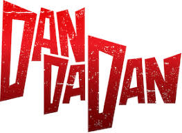

Dandadan (Dan Da Dan)
Synopsis: Momo Ayase believes in ghosts but not aliens, while Ken “Okarun” Takakura believes in aliens but not ghosts. In a bet to prove who’s right, they each visit places tied to the paranormal and the extraterrestrial—only to encounter overwhelming supernatural threats, awaken hidden powers, and fight together. :contentReference[oaicite:0]{index=0}
Total Episodes: ~24 (so far) :contentReference[oaicite:1]{index=1}
Episode Duration: ~24 mins :contentReference[oaicite:2]{index=2}
Total Seasons: 2+ :contentReference[oaicite:3]{index=3}
Genre(s): Action, Comedy, Supernatural, Mystery, Sci-Fi :contentReference[oaicite:4]{index=4}
Type: TV
Studio(s): Science SARU :contentReference[oaicite:5]{index=5}
Release Year: 2024 :contentReference[oaicite:6]{index=6}
Start Date: October 4, 2024 :contentReference[oaicite:7]{index=7}
End Date: Still Airing / ongoing :contentReference[oaicite:8]{index=8}
Airing Status: Airing :contentReference[oaicite:9]{index=9}
Broadcast Schedule: Seasonal / cours-based :contentReference[oaicite:10]{index=10}
Age Rating: TV-MA / mature themes (violence, supernatural) :contentReference[oaicite:11]{index=11}
IMDb Rating: ~8.3/10 :contentReference[oaicite:12]{index=12}
Available On: Crunchyroll, Netflix, Hulu :contentReference[oaicite:13]{index=13}
Related Works: “Dan Da Dan: First Encounter” (movie adaptation), “Dan Da Dan: Evil Eye” (film / theatrical arcs) :contentReference[oaicite:14]{index=14}